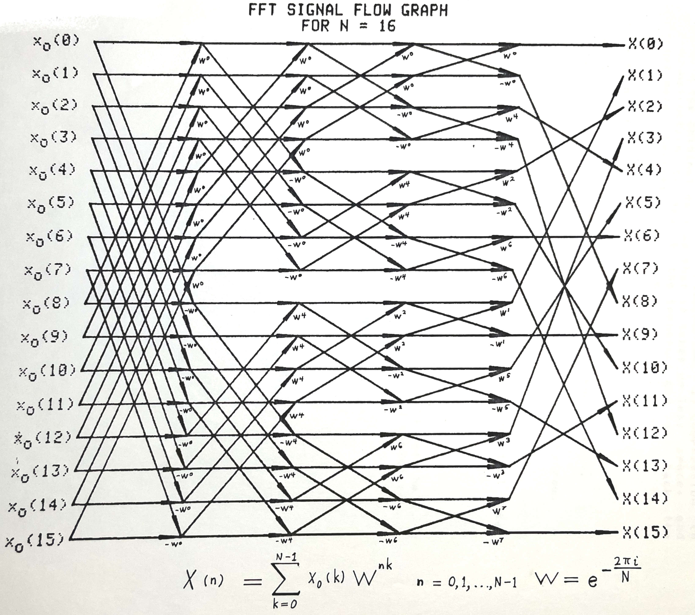

Overview
The Fast Fourier Transform (FFT) is a fast method for evaluating the discrete Fourier transform (DFT) defined to be the complex exponential sum, $$ \hat{x}_n = {1 \over \sqrt{N}} \sum_{k=0}^{N-1} x_k W^{k n} \quad n = 0 \ldots N-1 $$ on the sequence $\{ x_n \: \vert \: n = 0 \ldots N-1 \}$ where $W = e^{-2 \pi i / N}$ is an nth root of unity, and i denotes $\sqrt {-1}$
The FFT performs $O(n \: lg \: N)$ operations when N is a power of 2.
Here's C++ software which implements a power of two FFT. We create it as a derived class of the STL vector type.
Features
- Clean C++ language implementation of a standard power of 2 FFT algorithm. You can define single or double precision floating point.
Download
Source code Version 1.5 and executables are distributed under the terms of the GNU General Public License.
- FFT.cpp
- FFT classes implementation.
-
 View
View
-
 Download
Download
- FFT.hpp
- FFT include file.
-
View
-
Download
- testFFT.cpp
- Main unit test or demo program.
-
View
-
Download
- makefile
- compile, test, run
-
View
-
Download
- fftIn.txt
- Input test file.
-
View
-
Download
- fftOut.txt
- Output test file.
-
View
-
Download
- FFT.FOR
- FFT in fixed format FORTRAN (not FORTRAN 90).
-
View
-
Download
- FFTD.FOR
- FFT driver in fixed format FORTRAN (not FORTRAN 90).
-
View
-
Download
- fftOut-macOS-ARM-M1max-clang.txt,
fftOut-UbuntuLinux-AMD-x86_64-gcc.txt - Same exact results on two quite different computers: [MacOS, M1 max ARM CPU, Clang] and [Ubuntu/Linux, AMD x86_64, gcc]. All hail the IEEE floating point standard.
-
View
-
Download
Install and Run
On Mac OS X, I use the Xcode IDE; on Unix systems, I use the built-in gcc compiler and gdb debugger. For online C++ language tutorials, books and references, see links to C++ documentation.
DFT on a Discretized Sine Wave, Sampling Theorem, and Windowing
Theorem. Let's show the DFT of a digitized sine wave with frequency $f$ and sampled at frequency $f_s$ which is periodic on the interval $[0, N)$, i.e. $T = N T_s$, is zero except when $n = 1$ when its value is $\frac{ N }{ 2i }$ and $n = N-1$ when its value is $-\frac{ N }{ 2i }$
Proof. $$ \mathcal{ DFT } \left( sin \left( 2 \pi \frac{ f }{ f_s } k \right) \right)(n) = $$ $$ \sum_{k=0}^{N-1} e^{ - \frac{ 2 \pi i }{ N } nk} \left[ \frac{ e^{ 2 \pi i \frac{ f }{ f_s } k} - e^{ -2 \pi i \frac{ f }{ f_s } k} }{ 2 i } \right] = $$ $$ \frac{ 1 }{ 2 i } \sum_{k=0}^{N-1} e^{ 2 \pi i k \left( \frac{ f }{ f_s} - \frac{ n }{ N } \right) } - \frac{ 1 }{ 2 i } \sum_{k=0}^{N-1} e^{ -2 \pi i k \left( \frac{ f }{ f_s} + \frac{ n }{ N } \right) } $$ By the geometric series sum formula, $$ \sum_{k=0}^{N-1} e ^{ 2 \pi i k \theta} = $$ $$ 1 + e^{2 \pi i \theta} + {(e^{2 \pi i \theta})}^2 + \ldots + {(e^{2 \pi i \theta})}^{N-1} $$ $$ = \Bigg\{ \begin{array}{rl} \frac{ 1 - {e^{2 \pi i N \theta}} }{ 1 - e^{2 \pi i \theta}} \quad \text{ for } e^{2 \pi i \theta} \neq 1 \\ N \quad \text{ for } e^{2 \pi i \theta} = 1 \end{array} $$
and let's suppose that the sine wave period and sampling period are related as $T = N T_s$ or $\frac{ f }{ f_s } = \frac{ 1 }{ N }$ then $$ \mathcal{ DFT } \left( sin \left( 2 \pi \frac{ f }{ f_s } k \right) \right)(n) = $$ $$ \frac{ 1 }{ 2 i } \Bigg\{ \begin{array}{rl} \frac{ 1 - {e^{2 \pi i (1-n)}} }{ 1 - e^{2 \pi i (1-n)/N}} \quad \text{ for } e^{2 \pi i (1-n)/N} \neq 1 \\ N \quad \text{ for } e^{2 \pi i (1-n)/N} = 1 \end{array} \Bigg\} $$ $$ - \frac{ 1 }{ 2 i } \Bigg\{ \begin{array}{rl} \frac{ 1 - {e^{2 \pi i (1+n)}} }{ 1 - e^{2 \pi i (1+n)/N}} \quad \text{ for } e^{2 \pi i (1+n)/N} \neq 1 \\ N \quad \text{ for } e^{2 \pi i (1+n)/N} = 1 \end{array} \Bigg\} $$ but $$e^{2 \pi i k} = 1 \Leftrightarrow k \in \mathbb{Z}$$ so the numerators are zero except when setting $n = 1$ on the left and and $n = N-1$ on the right in which case the result is $\frac{ N }{ 2i }$ or $-\frac{ N }{ 2i }$ $\blacksquare$
The discrete Fourier transform (DFT) is a discrete time approximation to the Fourier integral over a finite domain. It assumes the data in the domain is periodic. If it is not, any discontinuity at the beginning and end will generate artificial high frequencies which mix in with the power spectrum, called spectral leakage. To avoid that, people apply windowing functions to the data before applying the FFT.
Here's an example of a DFT on a single frequency and how to use windowing to reduce spectral leakage,


FFT Derivation
The Fast Fourier Transform (FFT) is a fast method for evaluating the complex exponential sum, $$ X_n = \sum_{k=0}^{N-1} x_k W^{nk} \quad n = 0 \ldots N-1 $$ in $ O(n \: lg \: n) $ operations where $ W = e^{-2 \pi i / N} $ is an nth root of unity and the symbol i denotes $ \sqrt {-1} $ and N is a power of 2: $N = 2^g $. Express the summation indices in binary, $$ n = 2^{g-1} n_{g-1} + 2^{g-2} n_{g-2} + \ldots + n_0 $$ $$ k = 2^{g-1} k_{g-1} + 2^{g-2} k_{g-2} + \ldots + k_0 $$ to expand the sum into $$ X(n_{g-1}, n_{g-2}, \ldots, n_0 ) = \sum_{k_0=0}^1 \: \sum_{k_1=0}^1\ldots \sum_{k_{g-1}=0}^1 \quad x(k_{g-1}, k_{g-2}, \ldots , k_0) W^{nk} $$ Expand out the complex exponential term $$ W^{n k} = W^{(2^{g-1} n_{g-1} + \ldots + n_0) (2^{g-1}k_{g-1})} \times \nonumber \\ W^{(2^{g-1} n_{g-1} + \ldots + n_0) (2^{g-2}k_{g-2})} \times \ldots \times \nonumber \\ W^{(2^{g-1} n_{g-1} + \ldots + n_0) (k_0)} \nonumber $$ Simplify using $$ W^{(m 2^g)} = W^{mN} = (W^N)^m = 1^m = 1 $$ because $$ W^N = (e^{2 \pi i / N})^N = e^{2 \pi i}=1 $$ which gives us $$ W^{n k} = W^{ (n_0) (2^{g-1}k_{g-1})} W^{(2 n_1 + n_0) (2^{g-2}k_{g-2})} \ldots W^{(2^{g-1} n_{g-1} + \ldots + n_0) (k_0)} $$ Substitute back into the sum to give $$ \sum_{k_0=0}^1 \: \sum_{k_1=0}^1\ldots \sum_{k_{g-1}=0}^1 \quad x(k_{g-1}, k_{g-2}, \ldots , k_0) W^{ (n_0) (2^{g-1}k_{g-1})} W^{(2 n_1 + n_0) (2^{g-2}k_{g-2})} W^{(2^{g-1} n_{g-1} + \ldots + n_0) (k_0)} $$ Break apart the sum into intermediate sums. And the last equation is a permutation of the vector $X$. $$ x_1( n_0, k_{g-2}, \ldots, k_0 ) = \sum_{k_{g-1}=0}^1 \: x_0(k_{g-1}, k_{g-2}, \ldots, k_0) W^{(n_0)(2^{g-1} k_{g-1})} $$ $$ x_2( n_0, n_1, k_{g-3}, \ldots, k_0 ) = \sum_{k_{g-2}=0}^1 \: x_1(n_0, k_{g-2}, \ldots, k_0) W^{(2 n_1 + n_0)(2^{g-2} k_{g-2})} $$ $$ \ldots $$ $$ x_l( n_0, \ldots, n_{l-2}, n_{l-1}, k_{g-l-1}, \ldots, k_0 ) = \sum_{k_{g-l}=0}^1 \: x_{l-1}(n_0, \ldots, n_{l-2}, k_{g-l}, k_{g-l-1}\ldots, k_0) W^{(n_0 + 2 n_1 + \ldots + 2^{1-1} n_{l-1}) (2^{g-l} k_{g-l})} $$ $$ \ldots $$ $$ x_g( n_0, n_1, \ldots, n_{g-1}) = \sum_{k_0=0}^1 \: x_{g-1}(n_0, n_1, \ldots, k_0) W^{(2^{g-1} n_{g-1} \ldots + n_0)(2^{g-2} k_0)} $$ $$ X(n) = X(n_{g-1}, n_{g-2}, \ldots, n_0 ) = x_g( n_0, n_1, \ldots, n_{g-1}) $$ The calculations can arranged into a signal flow graph. Each $l^{\text{th}}$ column corresponds to the $l^{th}$ sum. Each $k^{\text{th}}$ row corresponds to a value of the index $k = n_0, \ldots, k_0$ in the output $x_l( k )$. For the $l^{\text{th}}$ sum, the computations can be arranged into pairs called butterflies and these pairs, in turn, form larger collections called groups.

The $l^{th}$ sum expands out to $$ x_l( n_0, \ldots, n_{l-2}, n_{l-1}, k_{g-l-1}, \ldots, k_0 ) = x_{l-1}(n_0, \ldots, n_{l-2}, 0, k_{g-l-1}\ldots, k_0) W^{(n_0 + 2 n_1 + \ldots + (2^{1-1} n_{l-1}) (2^{g-l} 0)} + x_{l-1}(n_0, \ldots, n_{l-2}, 1, k_{g-l-1}\ldots, k_0) W^{(n_0 + 2 n_1 + \ldots + (2^{1-1} n_{l-1}) (2^{g-l} 1)} $$ or $$ x_l( n_0, \ldots, n_{l-2}, n_{l-1}, k_{g-l-1}, \ldots, k_0 ) = x_{l-1}(n_0, \ldots, n_{l-2}, 0, k_{g-l-1}\ldots, k_0) + x_{l-1}(n_0, \ldots, n_{l-2}, 1, k_{g-l-1}\ldots, k_0) W^{(n_0 + 2 n_1 + \ldots + (2^{1-1} n_{l-1}) (2^{g-l})} $$ So now lets iterate over the indices $n_i$ and $k_i$ in order from lowest value $0$ to highest value $N-1$ and look at the patterns.
References
- J. W. Cooley and J. W. Tukey, "An algorithm for the machine calculation of complex Fourier series," Math. Comp., vol. 19, pp. 297-301, April 1965.
- The standard text on signal processing is Discrete Time Signal Processing by Oppenheim and Schafer
- My power of 2 implementation is derived from E. Oran Brigham's book
- Fast implementations: Fastest Fourier Transform in the West, KFR library (I haven't tried these).
- A note on spectral leakage and windowing Understanding FFTs and Windowing